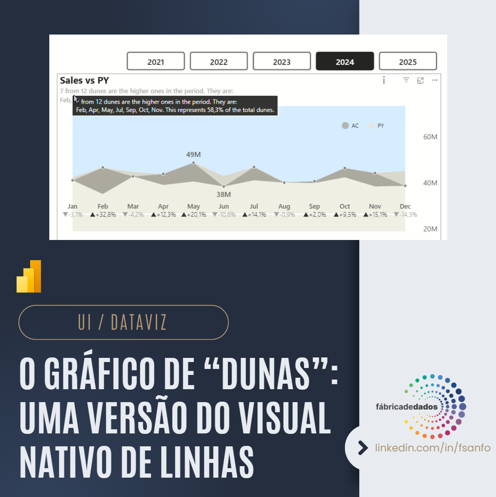
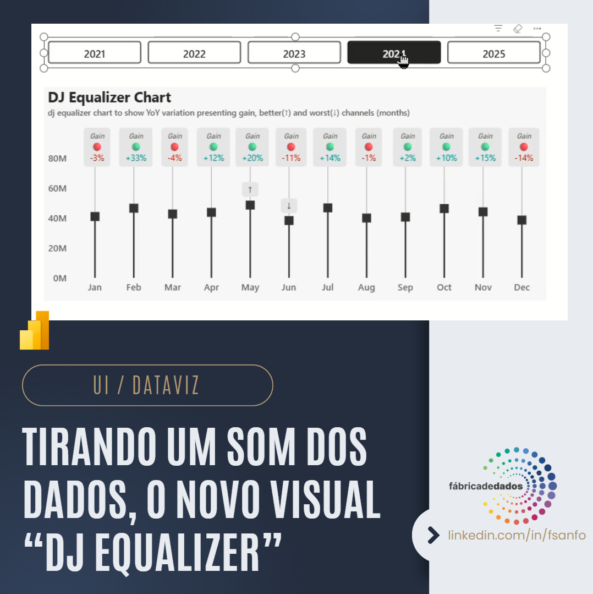
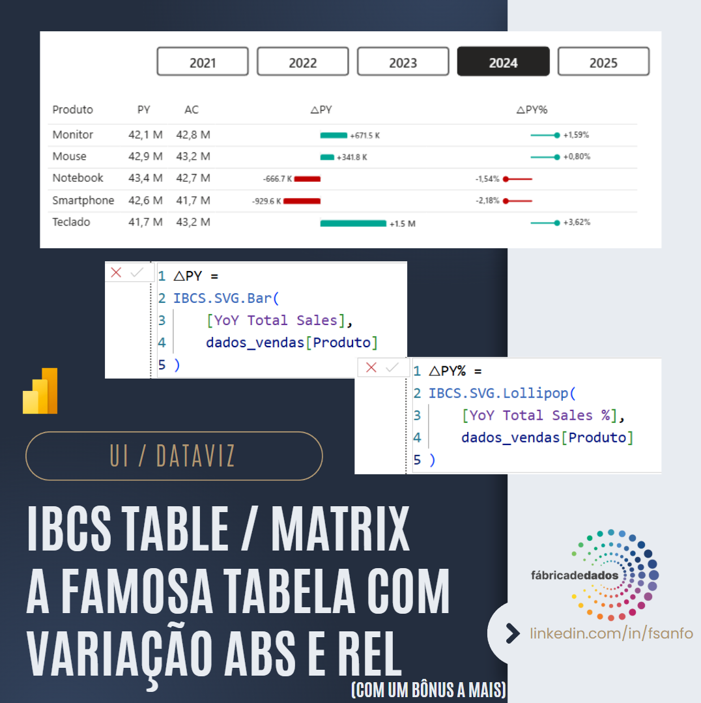
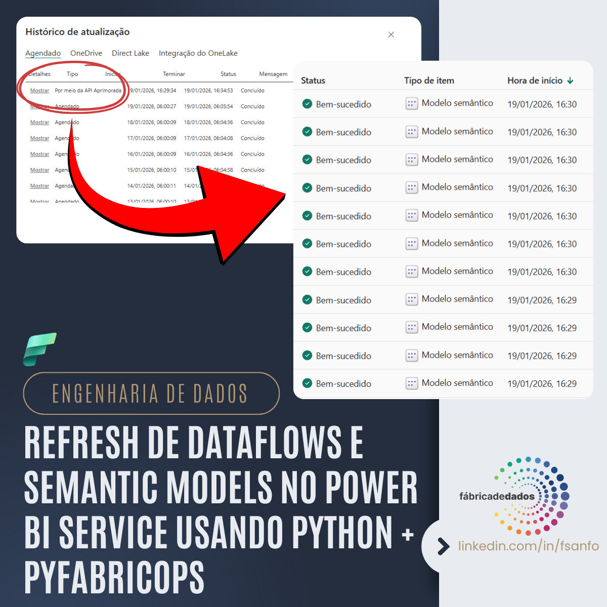
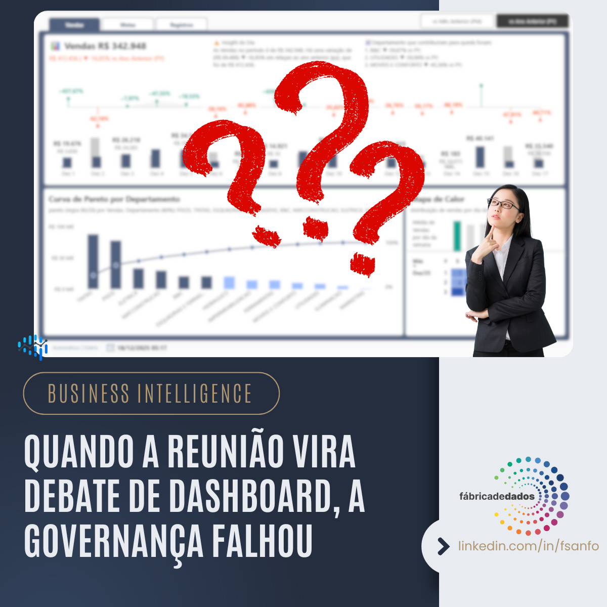
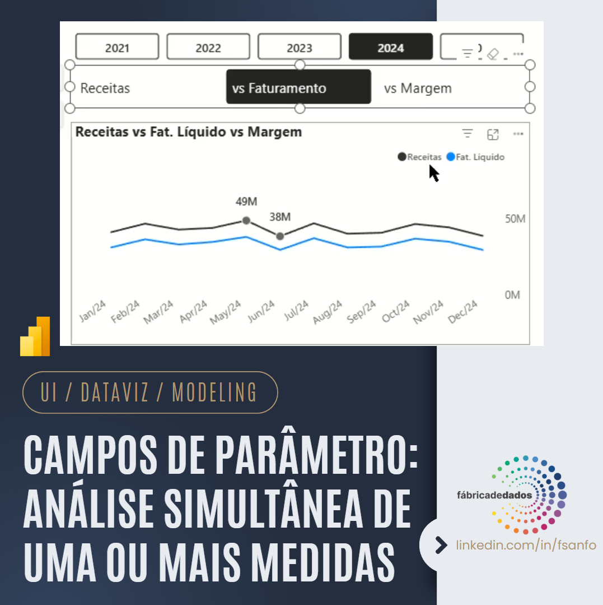
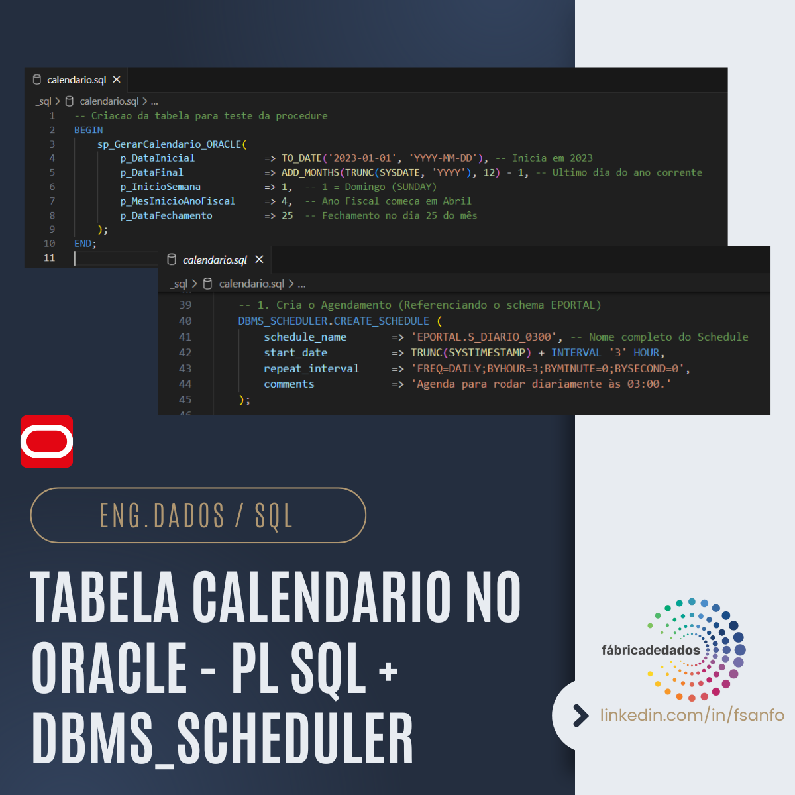
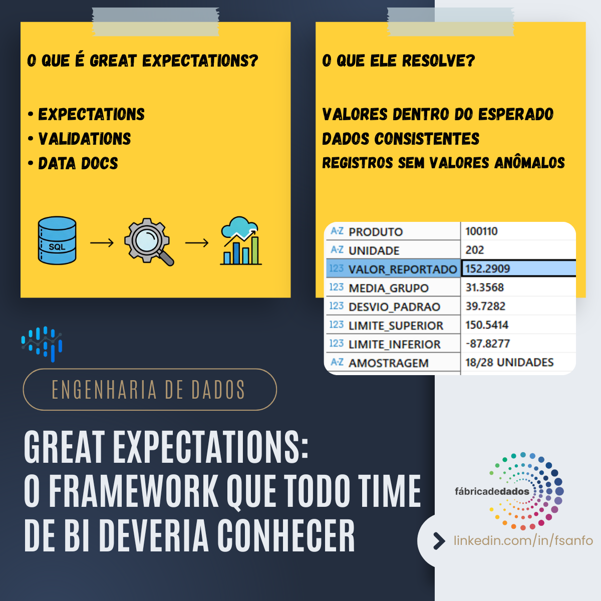
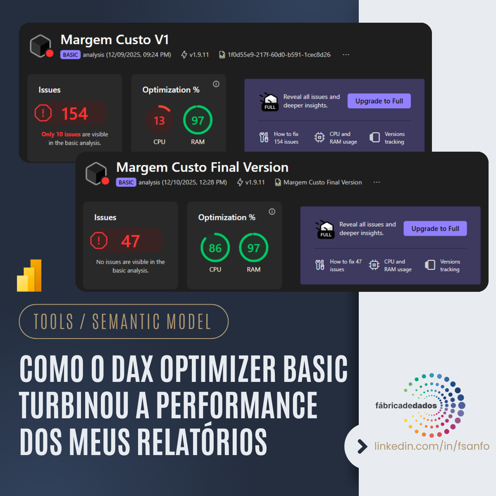

Portfólio de Projetos
Projetos selecionados que demonstram a aplicação prática de Business Intelligence, DataViz e Modelagem Analítica para transformar dados em decisões estratégicas.

Dune Chart: Visualização com História
Inspirado nos Lençóis Maranhenses, este gráfico transforma a linha nativa do Power BI em uma visualização rica de performance YoY%, onde a forma e a cor das "dunas" contam a história da performance mensal.
Ver Detalhes
DJ Equalizer: Tirando um Som dos Dados
Uma abordagem criativa que utiliza a metáfora de uma mesa de som de DJ para representar dados de negócio. Os "volumes" são os valores realizados e o "ganho" exibe a variação YoY, criando uma conexão intuitiva e inovadora.
Ver Detalhes
Soluções IBCS com Visuais Nativos
Série de projetos aplicando o padrão IBCS de forma eficiente no Power BI. A solução recria tabelas, gráficos de cascata e variações com Medidas SVG e Cálculos Visuais, otimizando a clareza e a performance dos relatórios.
Ver Detalhes
PyFabricOps: Automatizando Refresh no Power BI com Python
Script Python desenvolvido para orquestrar o refresh de Dataflows Gen1 e Semantic Models em múltiplos workspaces do Power BI Service. Utilizando a biblioteca pyfabricops, autenticação OAuth e logging estruturado, a solução elimina dezenas de cliques manuais, reduz erros humanos e entrega rastreabilidade completa. Data Engineering também é sobre governança, observabilidade e automação.
Ver Detalhes
Forecast: Abordagens e Limitações
Análise comparativa das três principais abordagens de forecast utilizadas no mercado: venda futura, média móvel e inteligência temporal (ano anterior + growth). O estudo detalha os pontos fortes e fracos de cada método, concluindo que não existe um "melhor forecast", mas sim o mais adequado ao contexto e à decisão a ser tomada.
Ver Detalhes
Quando a Reunião Vira Debate de Dashboard, a Governança Falhou
Se as reuniões de diretoria se tornam disputas sobre qual dashboard está correto, o problema não é o dashboard — é a falta de governança de dados. Este post aborda como garantir uma única versão da verdade: métricas padronizadas seguindo regras de mercado, curadoria pela controladoria e rastreabilidade na ingestão e transformação dos dados. O papel do analista vai muito além de "fazer gráfico".
Ver Detalhes
Parameter Fields: Múltiplas Análises
Solução avançada que usa Campos de Parâmetros para permitir que o usuário alterne entre diferentes contextos de análise com um único clique, melhorando a usabilidade e garantindo a clareza da comparação de métricas.
Ver Detalhes
Dim Calendar: Oracle Database
Uma tabela calendário no Oracle utilizando PL/SQL, DBMS_SCHEDULER e Jobs para manter a sua dimensão sempre robusta e atualizada na camada de banco de dados.
Ver Detalhes
Great Expectations: Data Quality e Observabilidade Proativa
Este projeto apresenta a implementação do Great Expectations (GE), um framework essencial para a qualidade e observabilidade de dados. O GE permite a definição e o monitoramento de expectativas de dados, atuando como um checkpoint proativo para detectar anomalias, inconsistências e violações de regras de negócio na fonte. A aplicação deste conceito, mesmo em bancos transacionais, garante que apenas dados íntegros avancem pela arquitetura analítica (Bronze → Silver → Gold), transformando a validação em uma estratégia contínua de confiança e maturidade de dados.
Ver Detalhes
DAX Optimizer Basic: Otimização de Performance
Aplicação das recomendações do DAX Optimizer Basic para analisar e otimizar um modelo semântico real no Power BI. A implementação resultou em uma redução de mais de 60% nos problemas identificados e uma melhoria superior a 70% no desempenho da CPU, comprovando a eficácia da ferramenta para garantir a performance e eficiência em relatórios complexos.
Ver Detalhes